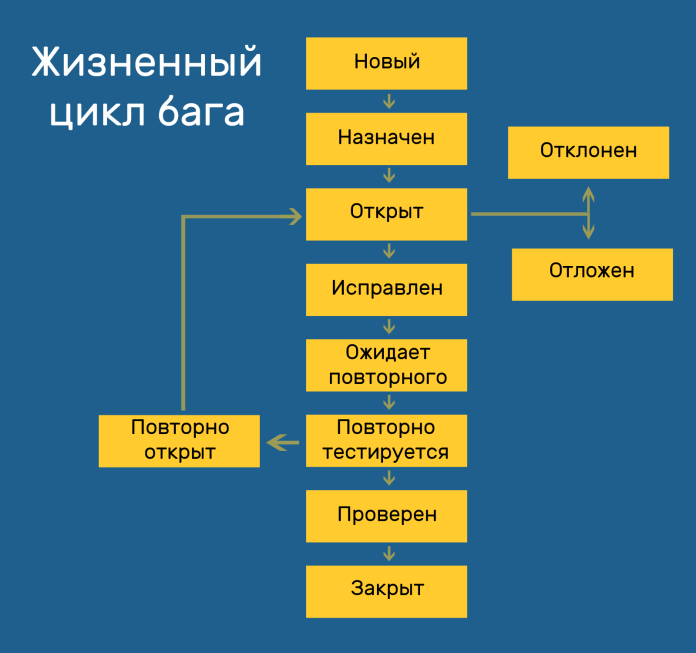

Тестовая документация: план, стратегия, чек-листы, кейсы
Тест-план (Test Plan)
Тест-план — это основной документ, описывающий объём, подходы,
ресурсы, расписание и критерии тестирования для проекта.
- Цели и задачи тестирования
- Объекты тестирования
- Роли и ответственные
- Сроки и этапы
-
Критерии начала и окончания тестирования
-
Риски и способы их
снижения
Разделы тест-плана: 1. Введение 2. Объекты тестирования 3. Объем
тестирования 4. Подходы и методы 5. Критерии начала/окончания 6. Роли
и ресурсы 7. Расписание 8. Риски 9. Приложения
Тестовая стратегия (Test Strategy)
Тестовая стратегия — Это высокоуровневый документ, определяющий как, что и когда тестировать в проекте
-
Описывает методы и типы тестирования
-
Подходы к качеству и безопасности
- Используемые инструменты
- Критерии приёмки
Разделы тестовой стратегии: 1. Цель и область применения 2. Подход к тестированию 3. Уровни тестирования 4. Типы тестирования 5. Роли и ответственность 6. Тестовая среда 7. Инструменты и технологии 8. Критерии входа и выхода 9. Риски и меры реагирования 10. График тестирования 11. Критерии качества 12. Отчетность и метрики
Отличие от тест-плана: Стратегия — это общий подход, а план —
конкретика для проекта.
Отчёт о результатах тестирования (Test Summary Report)
Отчёт о результатах тестирования — документ, который подводит итоги выполненного тестирования на определённом этапе разработки или перед выпуском. Он содержит информацию о проделанной работе, выявленных дефектах, покрытии требований и общем состоянии качества программного обеспечения.
Разделы отчёта о результатах тестирования: 1. Идентификация отчёта 2. Цели и объём тестирования 3. Метрики и статистика 4. Найденные дефекты 5. Детали по дефектам 6.Критические проблемы 7. Покрытие тестирования 8. Сравнение с критериями выхода 9. Оценка качества 10. Рекомендации и выводы
Чек-листы, тест-кейсы, баг-репорты, отчёты
-
Чек-лист — краткий
список проверок без подробных шагов
-
Тест-кейс —
это документированный сценарий или набор действий, который используется для проверки определённого функционала приложения. Он описывает условия, действия и ожидаемый результат , чтобы убедиться, что система ведёт себя так, как задумано.
-
Баг-репорт — это документ, в котором описывается проблема (дефект) в работе программного обеспечения.
Жизненный цикл бага

Этапы: New → Assigned → Fixed → Retest → Closed / Reopened / Rejected / Deferred
- New/Open — баг найден и зарегистрирован
- Assigned — назначен разработчику
- Fixed — исправлен
- Retest — проверка исправления
- Closed — баг закрыт, если не воспроизводится
- Rejected/Deferred — отклонён или отложен
Что важно: всегда указывайте шаги воспроизведения, ожидаемый и фактический результат, окружение.
Приоритет (Priority) и Серьезность (Severity)
Серьезность (Severity) - Определяет степень влияния бага на работу системы.
- Critical (Критический) – Система не работает (падение, блокирующая ошибка).Пример: Приложение crashes при запуске.
- High (Высокая) – Ключевая функция не работает, но система не падает. Пример: Невозможно оформить заказ в интернет-магазине.
- Medium (Средняя) – Частичная неработоспособность функции.Пример: Кнопка "Сохранить" работает, но не обновляет данные сразу.
- Low (Низкая) – Незначительная проблема, не влияющая на основную функциональность. Пример: Опечатка в тексте, некритичный UI-баг.
Приоритет (Priority) - Определяет очередь исправления бага.
- Immediate (P1 – Срочный) – Нужно исправить как можно быстрее (например, блокер релиза).
- High (P2 – Высокий) – Важно исправить в ближайшем билде.
- Medium (P3 – Средний) – Можно исправить в следующей версии.
- Low (P4 – Низкий) – Исправление откладывается (косметические дефекты).
В разработке программного обеспечения (ПО) используются несколько терминов для описания проблем
- Баг (Bug) – Это ошибка или сбой в программном обеспечении, который приводит к неправильному или неожиданному поведению системы. Баги могут быть вызваны ошибками в коде, логике или дизайне.Пример: Кнопка "Сохранить" не сохраняет файл.
- Дефе́кт (Defect) – Отклонение от требований или спецификаций. Пример: В документации сказано, что поле должно быть числовым, но оно принимает текст.
- Оши́бка (Error) – это человеческая ошибка, которая приводит к неправильному результату (опечатка, логическая ошибка в коде).Пример: Программист написал x + 1 вместо x - 1.
- Сбо́й (Failure) – Ситуация, когда программа не может выполнить свою функцию (например, падает).Пример: Приложение аварийно закрывается при открытии определённого файла.